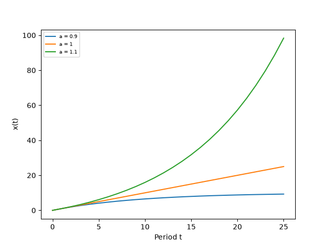
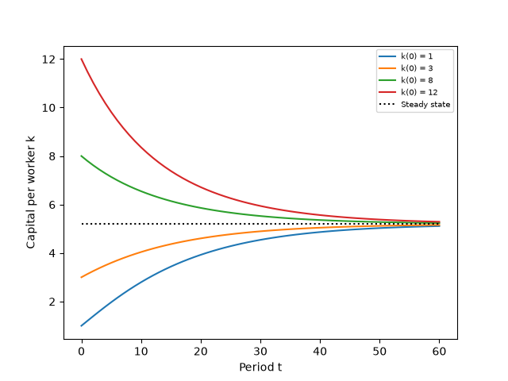
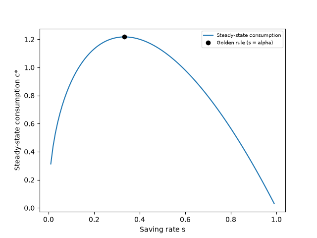

第 12 章: 漸化式と経済成長¶
12.1 この章の地図¶
第 4 章の発展で、漸化式 x(t + 1) = a·x(t) + b を、iterate_map で反復しました。反復は、t 期の値を知るのに、t 回の計算が要ります。この章では、反復せずに t 期の値を求める閉じた解を導き、反復と一致することをテストにします。
経済成長の基本モデル（ソロー・モデル）は、「今期の資本から、来期の資本が決まる」漸化式です。ただし、1 次式ではありません。それでも、定常状態（動かなくなる点）・収束するか・どれだけ速く収束するかは、この章の 1 次の漸化式の道具で調べられます。この章は、第 3 部（第 9〜12 章）と、連載の最後の章で、到達チェックも行います。

| 項目 | 内容 |
|---|---|
| 経済学の題材 | 経済成長、ソロー・モデル（資本の蓄積・定常状態）、黄金律の貯蓄率、収束の速さ、人口成長と技術進歩（発展） |
| 数学 | 1 次の漸化式の閉じた解、収束・発散・振動の分類、半減期（対数）、非線形の漸化式の不動点、不動点の近くでの線形近似（数値微分） |
| 使う Python の機能 | pytest.mark.parametrize、lambda、テスト（pytest） |
| 新しく導入するライブラリ | なし |
| 完成形 | recurrence_closed_form、classify_linear_recurrence、recurrence_half_life、solow_next_capital、solow_capital_path、solow_steady_state_capital、solow_steady_state_consumption、golden_rule_saving_by_grid、solow_convergence_factor、solow_next_capital_with_growth、solow_steady_state_with_growth |
| ファイル | 実装: lib/chapter12/recurrence.py（1 次の漸化式）、lib/chapter12/solow.py（ソロー・モデル）、lib/chapter12/plot.py（図）／テスト: test/chapter12/test_recurrence.py、test/chapter12/test_solow.py、test/chapter12/test_plot.py |
| データ | なし（手計算できる小さな例だけ） |
数学の式とコードの対応¶
| 経済学・数学 | 式 | コード |
|---|---|---|
| 1 次の漸化式の閉じた解 | x(t) = a^t·(x(0) − x) + x、x* = b ÷ (1 − a) | recurrence_closed_form(a, b, start, t) |
| ふるまいの分類 | |a| < 1 なら収束、|a| > 1 なら発散、a < 0 なら振動 | classify_linear_recurrence(a) |
| 半減期 | |a|^n = 1/2 を解いた n = ln 2 ÷ (−ln |a|) | recurrence_half_life(a) |
| 資本の蓄積 | k(t + 1) = s·k(t)^α + (1 − δ)·k(t) | solow_next_capital(k, s, alpha, delta) |
| 定常状態 | s·k^α = δ·k から k* = (s ÷ δ)^(1 ÷ (1 − α)) | solow_steady_state_capital(s, alpha, delta) |
| 定常状態の消費 | c* = k^α − δ·k | solow_steady_state_consumption(s, alpha, delta) |
| 収束の速さ | 定常状態での傾き 1 − δ(1 − α) | solow_convergence_factor(alpha, delta) |
記号について: k は労働者 1 人あたりの資本、s は貯蓄率、α は資本の分配率（生産関数 f(k) = k^α の指数）、δ は資本の減耗率です。x* は、漸化式の不動点（定常状態）です。
前提とする章¶
| できること | 場所 |
|---|---|
漸化式を反復し、不動点 b ÷ (1 − a) を求める（iterate_map・affine_fixed_point） |
第 4 章の発展 |
対数で「何年で倍になるか」を解く（years_to_multiply） |
第 3 章 |
数値微分（numerical_derivative）で傾きを求める |
第 5 章 |
格子探索（argmax_on_grid）で最大の点を探す |
第 2 章 |
差分方程式とソロー・モデルの経済学（データとの比較・所得の調整・収束の議論）は、マクロ経済学のためのプログラミング（中級＋）の第 4 章（差分方程式）と第 5 章（ソロー・モデル）で扱います。この章は、そこで使う数学（漸化式）を、関数とテストで確かめます。
12.2 準備¶
cd apps/math-for-economics-programming/python
uv run pytest test/chapter12
62 passed
自分でコードを書くときは、practice/chapter12/ に、完成形と同じ名前のファイル（recurrence.py・solow.py・plot.py・test_recurrence.py・test_solow.py・test_plot.py）を作ります。図を後回しにするなら、plot.py と test_plot.py は要らず、テストは 58 件になります。
- 3 つのテスト・
plot.py・check スクリプトの import を、from practice.chapter12...に書き換えます（test_solow.pyはrecurrenceを、plot.pyはsolowを import します。書き換えないと、完成形を動かします） - 第 2〜5 章の関数（
argmax_on_grid・years_to_multiply・iterate_map・affine_fixed_point・numerical_derivative）は、前の章を写していなければ、lib.chapterNN...のままでかまいません（写したなら、practice.chapterNN...に書き換えます）。この章では、それらの実装を再掲しません - テストの import の一覧は、完成形の全関数です。まだ書いていない関数を import すると、
ImportErrorになります。関数を 1 つ書くたびに、名前を import に足してください
「予想の答え合わせ」のスクリプトは、practice/chapter12/check.py に保存し、uv run python -m practice.chapter12.check で実行します。
12.3 予想する¶
次の 5 つの問いに、紙で、手計算で答えてください。答えは、この節には書いてありません。「プログラミング」の節の「予想の答え合わせ」で確かめます。
- x(t + 1) = 0.5·x(t) + 6、x(0) = 20 です。不動点と、x(1)・x(2)・x(3) は、いくつですか。a を −0.5 に変え、x(0) = 0 にすると、x(1)・x(2)・x(3) は、どう動きますか。収束しますか
- ソロー・モデルで、s = 0.3、α = 1/3、δ = 0.1 です。定常状態の資本 k、1 人あたりの生産 y = k^α、消費 c = (1 − s)·y* は、いくつですか（小数第 3 位まで）
- 貯蓄率を 0.3 から 1/3 に上げると、定常状態の資本と消費は、それぞれ増えますか、減りますか。定常状態の消費を最大にする貯蓄率は、いくつですか
- 2 つ目の問いのモデルで、定常状態の近くでは、定常状態からの差が、毎期、何倍になりますか。差が半分になるまで、何期かかりますか
- （発展）人口成長率 n = 0.02、技術進歩率 g = 0.01 を入れると、効率労働 1 単位あたりの定常状態の資本は、2 つ目の問いの k* より大きくなりますか、小さくなりますか。発展の節を飛ばす方は、この問いも、飛ばしてかまいません
12.4 漸化式と経済成長の考え方¶
1 次の漸化式の閉じた解¶
x(t + 1) = a·x(t) + b の不動点を x* = b ÷ (1 − a) とします（a ≠ 1）。x* = a·x* + b を引くと、
x(t + 1) − x* = a·(x(t) − x*)
です。不動点からの差 d(t) = x(t) − x* は、公比 a の等比数列です（第 4 章）。d(t) = a^t·d(0) なので、
x(t) = a^t·(x(0) − x) + x
です。これが、閉じた解です。反復しなくても、t を代入するだけで、t 期の値が求まります。a = 1 のときは、不動点がなく、x(t) = x(0) + b·t（公差 b の等差数列）です。
a の大きさと符号で、ふるまいが決まる¶
差が毎期 a 倍なので、a だけで、ふるまいが決まります（b と x(0) によらない）。
| a | ふるまい | classify_linear_recurrence |
|---|---|---|
| 0 ≤ a < 1 | 不動点に、片側から近づく（収束） | "converges" |
| −1 < a < 0 | 不動点の上下を行き来しながら、近づく | "converges with oscillation" |
| a > 1 | 不動点から、片側に離れていく（発散） | "diverges" |
| a < −1 | 上下を行き来しながら、離れていく | "diverges with oscillation" |
| a = 1 | 等差数列（不動点がない） | "arithmetic" |
| a = −1 | 2 つの値を、交互にとる | "two-cycle" |
収束するとき、差が半分になるまでの期数（半減期）は、|a|^n = 1/2 を対数で解いた n = ln 2 ÷ (−ln |a|) です。第 3 章の「倍になる年数」と同じ形の計算です。
ソロー・モデル¶
労働者 1 人あたりの資本を k、生産を y = f(k) = k^α（0 < α < 1）とします。生産のうち、割合 s を貯蓄し、それが投資になって資本に加わります。資本は、毎期、割合 δ だけ減耗します（古くなって使えなくなる）。来期の資本は、
k(t + 1) = s·k(t)^α + (1 − δ)·k(t)
です。k^α があるので、1 次の漸化式ではありません。閉じた解も、ありません。それでも、次の 3 つは、求まります。
定常状態の求め方¶
定常状態は、k(t + 1) = k(t) = k* となる点（漸化式の不動点）です。代入すると、s·k^α = δ·k（貯蓄 ＝ 減耗。新しい投資が、古くなった分をちょうど補う）です。k*^(α − 1) = δ ÷ s なので、
k* = (s ÷ δ)^(1 ÷ (1 − α))
です。反復して、k* に近づくことも、確かめます（公式と数値の 2 つの答え）。
収束の速さ: 不動点の近くの線形近似¶
k(t + 1) = g(k(t)) と書くと、定常状態の近くでは、g を接線で近似できます（第 5 章の微分）。
k(t + 1) − k* ≈ g'(k)·(k(t) − k)
これは、**a = g'(k) の 1 次の漸化式です。g'(k) = s·α·k^(α − 1 + 1 − δ に、定常状態の条件 s·k^(α − 1) = δ を入れると、g'(k) = 1 − δ(1 − α) です。0 < g'(k*) < 1 なので、差は毎期この倍になって、片側から定常状態に近づきます。傾きが 1 に近いほど、収束は遅くなります。
黄金律¶
定常状態の消費は、生産から、資本の維持（減耗の補充）を引いた c* = f(k) − δ·k です。貯蓄率を上げると、k* は大きくなりますが、消費 c* が増えるとは限りません。c* を k* で微分して 0 とおくと、
f'(k) = α·k^(α − 1) = δ（資本の限界生産物 ＝ 減耗率）
です。定常状態の条件 s·k*^(α − 1) = δ と比べると、s = α のときに、定常状態の消費が最大になります。これを黄金律の貯蓄率と言います。格子探索（第 2 章の argmax_on_grid）でも、確かめます。
解法のまとめ¶
| 手順 | すること | この章の例 |
|---|---|---|
| 1 | 漸化式を書く（来期の値を、今期の値の関数にする） | k(t + 1) = s·k^α + (1 − δ)·k |
| 2 | 定常状態: x(t + 1) = x(t) とおいて、解く | s·k^α = δ·k |
| 3 | 安定性: 定常状態での傾き g'(x*) の絶対値が 1 より小さいか | 1 − δ(1 − α) |
| 4 | 数値で確かめる: 反復して、定常状態に近づくか | solow_capital_path |
発展: 人口成長と技術進歩
人口が率 n で、労働の効率（技術）が率 g で増えるとします。資本を「効率労働 1 単位あたり」で測ると、分母が毎期 (1 + n)(1 + g) 倍になるので、
k(t + 1) = (s·k(t)^α + (1 − δ)·k(t)) ÷ ((1 + n)(1 + g))
です。定常状態では、k·(1 + n)(1 + g) − (1 − δ)·k = s·k^α なので、
k* = (s ÷ (δ + n + g + n·g))^(1 ÷ (1 − α))
です。分母 δ + n + g + n·g が、減耗率 δ の代わりになります（資本は、減耗に加え、増えた人数と効率に行き渡らせる分だけ、必要になる）。n = g = 0 なら、基本のモデルに戻ります。
12.5 プログラミング¶
Red: 閉じた解のテスト¶
test_recurrence.py の先頭の import です（完成形の全関数）。第 3 章の years_to_multiply と、第 4 章の iterate_map・affine_fixed_point を使います。
import math
import pytest
from lib.chapter03.interest import years_to_multiply
from lib.chapter04.sequence import affine_fixed_point, iterate_map
from lib.chapter12.recurrence import (
classify_linear_recurrence,
recurrence_closed_form,
recurrence_half_life,
)
最初のテストは、手計算できる x(t + 1) = 0.5·x(t) + 6 です。2 つ目は、a を 0.9・−0.5・1.1・−1.5 にも変えて、閉じた解が、第 4 章の反復と一致することを確かめます（収束しない a も含む）。
def test_閉じた解は不動点からの差を毎期a倍する() -> None:
# x(t + 1) = 0.5·x(t) + 6、x(0) = 20。不動点 12、差 8 が 4、2、1 と半分になる
assert [recurrence_closed_form(0.5, 6, 20, t) for t in range(4)] == [20, 16, 14, 13]
@pytest.mark.parametrize(
("a", "b", "start"),
[(0.5, 6, 20), (0.9, 1, 0), (-0.5, 6, 0), (1.1, -2, 3), (-1.5, 4, 0.25)],
)
def test_閉じた解は反復と一致する(a: float, b: float, start: float) -> None:
path = iterate_map(a, b, start, 12)
closed = [recurrence_closed_form(a, b, start, t) for t in range(13)]
assert closed == pytest.approx(path)
def test_aが1なら閉じた解は公差bの等差数列() -> None:
assert [recurrence_closed_form(1, 3, 2, t) for t in range(4)] == [2, 5, 8, 11]
assert recurrence_closed_form(1, -0.5, 4, 10) == pytest.approx(-1)
assert recurrence_closed_form(1, 3, 2, 7) == pytest.approx(
iterate_map(1, 3, 2, 7)[-1]
)
def test_不動点から始めると動かない() -> None:
fixed = affine_fixed_point(0.9, 1)
assert recurrence_closed_form(0.9, 1, fixed, 25) == pytest.approx(fixed)
lib.chapter12.recurrence がないので、収集の時点で失敗します（Red）。
Green: 閉じた解¶
recurrence.py の先頭の import です。不動点は、第 4 章の affine_fixed_point で求めます（実装は、第 4 章を見てください）。math は、後の節の半減期で使います（この節では、まだ使いません）。
import math
from lib.chapter04.sequence import affine_fixed_point
def recurrence_closed_form(a: float, b: float, start: float, t: int) -> float:
"""t 期の値 x(t) = a^t·(x(0) − x*) + x*。a = 1 なら、等差数列 x(0) + b·t。"""
if t < 0:
raise ValueError("期 t は 0 以上でなければなりません")
if a == 1:
return start + b * t
fixed = affine_fixed_point(a, b)
return a**t * (start - fixed) + fixed
a**t * (start - fixed) + fixed が、式 a^t·(x(0) − x) + x そのものです。a = 1 を先に分けるのは、affine_fixed_point が a = 1 で ValueError を出すためです。a が 1 にごく近い（1 + 10⁻¹² など）と、桁落ちで、閉じた解が反復と末尾の桁でずれます（t = 100 で 100.0 と 100.00000000495）。この章では、その場合を扱いません。
ふるまいの分類と半減期¶
@pytest.mark.parametrize(
("a", "kind"),
[
(0.5, "converges"),
(0.9, "converges"),
(0, "converges"),
(-0.5, "converges with oscillation"),
(1.1, "diverges"),
(-1.5, "diverges with oscillation"),
(1, "arithmetic"),
(-1, "two-cycle"),
],
)
def test_aの大きさと符号でふるまいを分ける(a: float, kind: str) -> None:
assert classify_linear_recurrence(a) == kind
def test_aが負なら不動点の上下を行き来する() -> None:
# x(t + 1) = −0.5·x(t) + 6 の不動点は 4。差 −4 が 2、−1、0.5 と符号を変える
gaps = [recurrence_closed_form(-0.5, 6, 0, t) - 4 for t in range(5)]
assert gaps == pytest.approx([-4, 2, -1, 0.5, -0.25])
def test_差が半分になる期数は対数で求まる() -> None:
assert recurrence_half_life(0.5) == pytest.approx(1)
assert recurrence_half_life(0.25) == pytest.approx(0.5)
assert recurrence_half_life(0.9) == pytest.approx(math.log(2) / -math.log(0.9))
assert 0.9 ** recurrence_half_life(0.9) == pytest.approx(0.5)
def test_半減期は割引の逆で第3章の倍になる年数と同じ形() -> None:
assert recurrence_half_life(1 / 1.05) == pytest.approx(years_to_multiply(0.05, 2))
def classify_linear_recurrence(a: float) -> str:
"""不動点からの差が、毎期 a 倍になることから、ふるまいを分ける。"""
if a == 1:
return "arithmetic"
if a == -1:
return "two-cycle"
kind = "converges" if abs(a) < 1 else "diverges"
return kind + " with oscillation" if a < 0 else kind
def recurrence_half_life(a: float) -> float:
"""不動点からの差が、半分になるまでの期数 n。|a|^n = 1/2 を、対数で解く。"""
if not 0 < abs(a) < 1:
raise ValueError("差が半分になるのは、0 < |a| < 1 のときだけです")
return math.log(2) / -math.log(abs(a))
- a = ±1 を先に分けるので、
abs(a) < 1の判定には、1 ちょうどが来ません - 最後のテストは、半減期が第 3 章の「倍になる年数」と同じ計算であることを確かめます。a = 1 ÷ 1.05（割引）の差が半分になる期数は、利子率 5% で元本が倍になる年数と等しくなります
Red: ソロー・モデルのテスト¶
test_solow.py の先頭です。ALPHA は、α = 1/3 を、テストで何度も使うための定数です。
import pytest
from lib.chapter05.derivative import numerical_derivative
from lib.chapter12.recurrence import recurrence_half_life
from lib.chapter12.solow import (
golden_rule_saving_by_grid,
solow_capital_path,
solow_convergence_factor,
solow_next_capital,
solow_next_capital_with_growth,
solow_steady_state_capital,
solow_steady_state_consumption,
solow_steady_state_with_growth,
)
ALPHA = 1 / 3
def test_来期の資本は貯蓄と減耗後の資本の和() -> None:
# k = 8 なら f(k) = 2。0.3 × 2 + 0.9 × 8 = 7.8
assert solow_next_capital(8, 0.3, ALPHA, 0.1) == pytest.approx(7.8)
# k = 16・α = 0.5 なら f(k) = 4。0.2 × 4 + 0.95 × 16 = 16
assert solow_next_capital(16, 0.2, 0.5, 0.05) == pytest.approx(16)
def test_資本の経路は来期の資本を順に計算した列() -> None:
path = solow_capital_path(8, 0.3, ALPHA, 0.1, 2)
assert path == pytest.approx([8, 7.8, solow_next_capital(7.8, 0.3, ALPHA, 0.1)])
k = 8・α = 1/3 なら、f(k) = 8^(1/3) = 2 なので、手計算できます。2 つ目の例は、α = 0.5・k = 16 で、来期の資本が今期と同じ 16 になる（定常状態の）例です。
Green: 資本の蓄積¶
solow.py の先頭の import です。第 2 章の argmax_on_grid は、後の節（黄金律の格子探索）で使います。この節では、まだ使いません。
from lib.chapter02.quadratic import argmax_on_grid
def _check_solow(saving: float, alpha: float, depreciation: float) -> None:
if not 0 <= saving <= 1:
raise ValueError("貯蓄率 s は 0 以上 1 以下でなければなりません")
if not 0 < alpha < 1:
raise ValueError("資本の分配率 α は 0 < α < 1 でなければなりません")
if not 0 < depreciation <= 1:
raise ValueError("減耗率 δ は 0 より大きく 1 以下でなければなりません")
def solow_next_capital(
capital: float, saving: float, alpha: float, depreciation: float
) -> float:
"""来期の資本 = 貯蓄（投資）s·k^α + 減耗の後に残る資本 (1 − δ)·k。"""
_check_solow(saving, alpha, depreciation)
if capital < 0:
raise ValueError("資本は 0 以上でなければなりません")
return float(saving * capital**alpha + (1 - depreciation) * capital)
def solow_capital_path(
start: float, saving: float, alpha: float, depreciation: float, periods: int
) -> list[float]:
"""k(0) = start から、periods 期先までの資本の列（長さ periods + 1）。"""
if periods < 0:
raise ValueError("期数は 0 以上でなければなりません")
path = [start]
for _ in range(periods):
path.append(solow_next_capital(path[-1], saving, alpha, depreciation))
return path
float(...) で囲むのは、float ** float の型を、mypy が決められないためです（第 8 章と同じ）。
定常状態¶
def test_定常状態の資本はsをδで割った値の1マイナスα分の1乗() -> None:
assert solow_steady_state_capital(0.3, ALPHA, 0.1) == pytest.approx(3**1.5)
assert solow_steady_state_capital(0.2, 0.5, 0.05) == pytest.approx(16)
def test_定常状態では貯蓄が減耗にちょうど等しい() -> None:
for saving, alpha, delta in [(0.3, ALPHA, 0.1), (0.25, 0.4, 0.08), (0.6, 0.7, 0.3)]:
k = solow_steady_state_capital(saving, alpha, delta)
assert saving * k**alpha == pytest.approx(delta * k)
assert solow_next_capital(k, saving, alpha, delta) == pytest.approx(k)
@pytest.mark.parametrize("start", [0.5, 1, 10, 30])
def test_初期値が定常状態より小さくても大きくても収束する(start: float) -> None:
steady = solow_steady_state_capital(0.3, ALPHA, 0.1)
path = solow_capital_path(start, 0.3, ALPHA, 0.1, 400)
assert path[-1] == pytest.approx(steady, abs=1e-9)
gaps = [k - steady for k in path[:100]]
# 差の符号は変わらず（行き過ぎない）、大きさは毎期小さくなる
assert all(g * gaps[0] > 0 for g in gaps)
assert all(abs(g1) > abs(g2) for g1, g2 in zip(gaps, gaps[1:], strict=False))
def solow_steady_state_capital(
saving: float, alpha: float, depreciation: float
) -> float:
"""s·k^α = δ·k を解いた定常状態 k* = (s ÷ δ)^(1 ÷ (1 − α))。"""
_check_solow(saving, alpha, depreciation)
return float((saving / depreciation) ** (1 / (1 - alpha)))
- 2 つ目のテストは、定常状態の定義（貯蓄 ＝ 減耗、来期も同じ値）を、3 組のパラメーターで確かめます。公式の 1 ÷ (1 − α) を α ÷ (1 − α) と書き間違えると、ここで落ちます
- 3 つ目は、初期値 0.5・1（定常状態より小さい）と 10・30（大きい）から反復して、どれも定常状態に近づくこと、差の符号が変わらない（行き過ぎない）こと、差が毎期小さくなることを確かめます
黄金律¶
def test_定常状態の消費は生産から減耗を引いた値() -> None:
k = solow_steady_state_capital(0.3, ALPHA, 0.1)
expected = k**ALPHA - 0.1 * k
assert solow_steady_state_consumption(0.3, ALPHA, 0.1) == pytest.approx(expected)
# 消費は、生産の 1 − s 倍でもある
assert expected == pytest.approx(0.7 * k**ALPHA)
assert solow_steady_state_consumption(0.2, 0.5, 0.05) == pytest.approx(3.2)
@pytest.mark.parametrize(("alpha", "delta"), [(ALPHA, 0.1), (0.4, 0.05), (0.25, 0.2)])
def test_定常状態の消費を最大にする貯蓄率は格子探索でもαになる(
alpha: float, delta: float
) -> None:
assert golden_rule_saving_by_grid(alpha, delta, 1001) == pytest.approx(
alpha, abs=1e-3
)
def test_黄金律では資本の限界生産物が減耗率に等しい() -> None:
k = solow_steady_state_capital(ALPHA, ALPHA, 0.1)
slope = numerical_derivative(lambda x: x**ALPHA, k)
assert slope == pytest.approx(0.1)
def test_貯蓄率が黄金律より高くても低くても定常状態の消費は減る() -> None:
best = solow_steady_state_consumption(ALPHA, ALPHA, 0.1)
for saving in (0.2, 0.3, 0.4, 0.6):
assert solow_steady_state_consumption(saving, ALPHA, 0.1) < best
assert solow_steady_state_capital(0.6, ALPHA, 0.1) > solow_steady_state_capital(
ALPHA, ALPHA, 0.1
)
def solow_steady_state_consumption(
saving: float, alpha: float, depreciation: float
) -> float:
"""定常状態の消費 c* = f(k*) − δ·k*（生産のうち、資本の維持に使わない分）。"""
capital = solow_steady_state_capital(saving, alpha, depreciation)
return float(capital**alpha - depreciation * capital)
def golden_rule_saving_by_grid(alpha: float, depreciation: float, points: int) -> float:
"""0 から 1 までの貯蓄率の格子で、定常状態の消費が最大の貯蓄率（黄金律）。"""
return argmax_on_grid(
lambda s: solow_steady_state_consumption(s, alpha, depreciation), 0, 1, points
)
格子探索は、貯蓄率 0〜1 を 1001 点（間隔 0.001）に区切るので、許容誤差を 0.001 にしています。α を 1/3 だけでなく 0.4・0.25 にも変え、減耗率も変えて、「最大になる貯蓄率は α で、δ によらない」ことを確かめます。
収束の速さ¶
def test_収束の速さは定常状態での漸化式の傾き() -> None:
factor = solow_convergence_factor(ALPHA, 0.1)
assert factor == pytest.approx(1 - 0.1 * (2 / 3))
k = solow_steady_state_capital(0.3, ALPHA, 0.1)
slope = numerical_derivative(lambda x: solow_next_capital(x, 0.3, ALPHA, 0.1), k)
assert slope == pytest.approx(factor)
assert solow_convergence_factor(0.5, 0.05) == pytest.approx(0.975)
def test_定常状態の近くでは差が毎期ほぼ収束の速さ倍になる() -> None:
steady = solow_steady_state_capital(0.3, ALPHA, 0.1)
path = solow_capital_path(steady * 1.001, 0.3, ALPHA, 0.1, 2)
ratio = (path[2] - steady) / (path[1] - steady)
assert ratio == pytest.approx(solow_convergence_factor(ALPHA, 0.1), abs=1e-4)
assert recurrence_half_life(solow_convergence_factor(ALPHA, 0.1)) == pytest.approx(
10.05, abs=0.01
)
def solow_convergence_factor(alpha: float, depreciation: float) -> float:
"""定常状態での漸化式の傾き 1 − δ(1 − α)。差は、毎期ほぼこの倍になる。"""
return 1 - depreciation * (1 - alpha)
1 つ目のテストは、公式 1 − δ(1 − α) と、solow_next_capital を k* で数値微分した傾き（第 5 章）が一致することを確かめます。2 つ目は、定常状態から 0.1% ずらして反復し、差の比が、その傾きに近いことを確かめます。
発展: 人口成長と技術進歩¶
人口成長と技術進歩のテストと実装（発展。後回しにしても、学習は成り立ちます）
test_solow.py に足すテストです（import は、先頭で済ませています）。
def test_人口成長も技術進歩もなければ基本のモデルと同じ() -> None:
assert solow_next_capital_with_growth(8, 0.3, ALPHA, 0.1, 0, 0) == pytest.approx(
solow_next_capital(8, 0.3, ALPHA, 0.1)
)
assert solow_steady_state_with_growth(0.3, ALPHA, 0.1, 0, 0) == pytest.approx(
solow_steady_state_capital(0.3, ALPHA, 0.1)
)
def test_人口成長と技術進歩がある定常状態は反復の行き着く先() -> None:
# 分母 δ + n + g + n·g = 0.1 + 0.02 + 0.01 + 0.0002 = 0.1302
steady = solow_steady_state_with_growth(0.3, ALPHA, 0.1, 0.02, 0.01)
assert steady == pytest.approx((0.3 / 0.1302) ** 1.5)
k = 1.0
for _ in range(400):
k = solow_next_capital_with_growth(k, 0.3, ALPHA, 0.1, 0.02, 0.01)
assert k == pytest.approx(steady)
assert steady < solow_steady_state_capital(0.3, ALPHA, 0.1)
solow.py に足す実装です。
def _checked_growth_factor(
depreciation: float, population_growth: float, technology_growth: float
) -> float:
growth = (1 + population_growth) * (1 + technology_growth)
if depreciation + growth - 1 <= 0:
raise ValueError("δ + n + g + n·g が正でなければ、定常状態は決まりません")
return growth
def solow_next_capital_with_growth(
capital: float,
saving: float,
alpha: float,
depreciation: float,
population_growth: float,
technology_growth: float,
) -> float:
"""効率労働 1 単位あたりの資本: 来期の資本を (1 + n)(1 + g) で割る。"""
growth = _checked_growth_factor(depreciation, population_growth, technology_growth)
return solow_next_capital(capital, saving, alpha, depreciation) / growth
def solow_steady_state_with_growth(
saving: float,
alpha: float,
depreciation: float,
population_growth: float,
technology_growth: float,
) -> float:
"""k* = (s ÷ (δ + n + g + n·g))^(1 ÷ (1 − α))。"""
_check_solow(saving, alpha, depreciation)
growth = _checked_growth_factor(depreciation, population_growth, technology_growth)
return float((saving / (depreciation + growth - 1)) ** (1 / (1 - alpha)))
_checked_growth_factor は、(1 + n)(1 + g) を返し、δ + n + g + n·g = δ + (1 + n)(1 + g) − 1 が正でなければ ValueError にします（人口が減りすぎると、定常状態が決まらない）。
予想の答え合わせ¶
from lib.chapter12.recurrence import (
classify_linear_recurrence,
recurrence_closed_form,
recurrence_half_life,
)
from lib.chapter12.solow import (
golden_rule_saving_by_grid,
solow_convergence_factor,
solow_steady_state_capital,
solow_steady_state_consumption,
solow_steady_state_with_growth,
)
print([recurrence_closed_form(0.5, 6, 20, t) for t in range(4)])
print([recurrence_closed_form(-0.5, 6, 0, t) for t in range(4)])
print(classify_linear_recurrence(-0.5))
k = solow_steady_state_capital(0.3, 1 / 3, 0.1)
c = solow_steady_state_consumption(0.3, 1 / 3, 0.1)
print(round(k, 3), round(k ** (1 / 3), 3), round(c, 3))
k_gold = solow_steady_state_capital(1 / 3, 1 / 3, 0.1)
c_gold = solow_steady_state_consumption(1 / 3, 1 / 3, 0.1)
print(round(k_gold, 3), round(c_gold, 3))
print(round(golden_rule_saving_by_grid(1 / 3, 0.1, 1001), 3))
factor = solow_convergence_factor(1 / 3, 0.1)
print(round(factor, 4), round(recurrence_half_life(factor), 2))
print(round(solow_steady_state_with_growth(0.3, 1 / 3, 0.1, 0.02, 0.01), 3))
[20.0, 16.0, 14.0, 13.0]
[0.0, 6.0, 3.0, 4.5]
converges with oscillation
5.196 1.732 1.212
6.086 1.217
0.333
0.9333 10.05
3.498
- 1 つ目の問い: 不動点は 6 ÷ (1 − 0.5) = 12 です。差 8 が 4、2、1 と半分になり、x = 16、14、13 です。a = −0.5 なら、不動点は 6 ÷ 1.5 = 4 で、差 −4 が 2、−1 と符号を変えながら小さくなります。x = 6、3、4.5 と、4 の上下を行き来しながら収束します
- 2 つ目の問い: k* = (0.3 ÷ 0.1)^1.5 = 3^1.5 ≈ 5.196、y* = 3^0.5 ≈ 1.732、c* = 0.7 × 1.732 ≈ 1.212 です
- 3 つ目の問い: 貯蓄率 1/3 では、k* = (10/3)^1.5 ≈ 6.086、c* ≈ 1.217 で、どちらも増えます。定常状態の消費を最大にする貯蓄率は、α = 1/3 です（格子探索でも 0.333）。0.3 は黄金律より低いので、貯蓄率を上げると消費が増えました。黄金律より高い貯蓄率から、さらに上げると、資本は増えても消費は減ります
- 4 つ目の問い: 1 − 0.1 × (2/3) ≈ 0.9333 倍です。半減期は ln 2 ÷ (−ln 0.9333) ≈ 10.05 期です
- 5 つ目の問い（発展）: 分母が 0.1 から 0.1302 に大きくなるので、定常状態の資本は小さくなります（≈ 3.498）
境界のテスト¶
完成形には、本文に載せなかったテストがあります。負の期・0 期、負の a の半減期、半減期のない a、資本 0、減耗率 1、貯蓄率 0 と 1、0 期の経路、パラメーターの範囲の外、負の資本・負の期数、3 点だけの格子、人口が減りすぎるときです。テストの件数を合わせるため、ここに全件載せます。
境界のテスト
test_recurrence.py に足すテストです。
def test_負の期の閉じた解は求めない() -> None:
with pytest.raises(ValueError):
recurrence_closed_form(0.5, 6, 20, -1)
def test_0期の閉じた解は初期値() -> None:
assert recurrence_closed_form(1.1, -2, 3, 0) == 3
assert recurrence_closed_form(1, 3, 2, 0) == 2
def test_aが負でも半減期は差の大きさで測る() -> None:
assert recurrence_half_life(-0.5) == pytest.approx(1)
@pytest.mark.parametrize("a", [0, 1, -1, 1.1, -2])
def test_収束しないかすぐ止まるaには半減期がない(a: float) -> None:
# a = 0 は、対数の計算でなく、範囲の確かめで止める（メッセージで見分ける）
with pytest.raises(ValueError, match="差が半分"):
recurrence_half_life(a)
test_solow.py に足すテストです。
def test_資本が0なら生産も貯蓄も0で0のまま() -> None:
assert solow_capital_path(0, 0.3, ALPHA, 0.1, 3) == [0, 0, 0, 0]
def test_減耗率が1なら来期の資本は貯蓄だけ() -> None:
assert solow_next_capital(27, 0.3, ALPHA, 1) == pytest.approx(0.9)
def test_貯蓄率0なら定常状態は0で貯蓄率1なら消費は0() -> None:
assert solow_steady_state_capital(0, ALPHA, 0.1) == 0
assert solow_steady_state_consumption(0, ALPHA, 0.1) == 0
assert solow_steady_state_consumption(1, ALPHA, 0.1) == pytest.approx(0)
def test_0期の経路は初期値だけ() -> None:
assert solow_capital_path(5, 0.3, ALPHA, 0.1, 0) == [5]
@pytest.mark.parametrize(
("saving", "alpha", "delta"),
[
(-0.1, ALPHA, 0.1),
(1.1, ALPHA, 0.1),
(0.3, 0, 0.1),
(0.3, 1, 0.1),
(0.3, ALPHA, 0),
(0.3, ALPHA, 1.2),
],
)
def test_貯蓄率とαと減耗率の範囲の外では計算しない(
saving: float, alpha: float, delta: float
) -> None:
with pytest.raises(ValueError):
solow_next_capital(8, saving, alpha, delta)
with pytest.raises(ValueError):
solow_steady_state_capital(saving, alpha, delta)
def test_負の資本や負の期数では計算しない() -> None:
with pytest.raises(ValueError):
solow_next_capital(-1, 0.3, ALPHA, 0.1)
with pytest.raises(ValueError):
solow_capital_path(5, 0.3, ALPHA, 0.1, -1)
def test_格子探索には2点以上が必要で3点なら真ん中の貯蓄率() -> None:
with pytest.raises(ValueError):
golden_rule_saving_by_grid(ALPHA, 0.1, 1)
# 格子 0・0.5・1 のうち、両端の消費は 0（何も貯めない・全部貯める）
assert golden_rule_saving_by_grid(ALPHA, 0.1, 3) == 0.5
def test_人口が減りすぎて分母が正でなければ定常状態は決まらない() -> None:
with pytest.raises(ValueError):
solow_steady_state_with_growth(0.3, ALPHA, 0.1, -0.1, 0)
with pytest.raises(ValueError):
solow_next_capital_with_growth(8, 0.3, ALPHA, 0.1, -1, 0)
- 資本 0 は、k^α も 0 なので、ずっと 0 のままです（定常状態は、k* と 0 の 2 つ）。初期値が正なら、k* に近づきます
- 格子 0・1 の 2 点だけだと、両端の消費がどちらも 0 で、丸めの誤差で、どちらが選ばれるかが決まりません。テストは、3 点（0・0.5・1）にしています
図¶
章の冒頭の図（a を変えた 1 次の漸化式の経路。第 4 章の iterate_map で反復）と、資本の収束（初期値を変えた 4 つの経路と、定常状態）と、貯蓄率と定常状態の消費（黄金律の頂点）を描きます。


描画のテストと実装（後回しにしても、学習は成り立ちます）
テストの import:
import matplotlib.pyplot as plt
import numpy as np
import pytest
from matplotlib.axes import Axes
from lib.chapter04.sequence import iterate_map
from lib.chapter12.plot import (
plot_golden_rule,
plot_linear_recurrence_paths,
plot_solow_convergence,
)
from lib.chapter12.solow import (
solow_capital_path,
solow_steady_state_capital,
solow_steady_state_consumption,
)
ALPHA = 1 / 3
def _series(ax: Axes, label: str) -> tuple[list[float], list[float]]:
line = next(x for x in ax.lines if x.get_label() == label)
xs = np.asarray(line.get_xdata(), dtype=float).tolist()
ys = np.asarray(line.get_ydata(), dtype=float).tolist()
return xs, ys
def test_資本の収束の図は初期値ごとの経路と定常状態の水平の点線() -> None:
ax = plot_solow_convergence([1, 12], 0.3, ALPHA, 0.1, 40).axes[0]
for start in (1, 12):
xs, ys = _series(ax, f"k(0) = {start}")
assert xs == list(range(41))
assert ys == pytest.approx(solow_capital_path(start, 0.3, ALPHA, 0.1, 40))
line = next(x for x in ax.lines if x.get_label() == "Steady state")
xs, ys = _series(ax, "Steady state")
assert (xs[0], xs[-1]) == (0, 40)
assert ys == pytest.approx([solow_steady_state_capital(0.3, ALPHA, 0.1)] * 2)
assert line.get_linestyle() == ":"
assert ax.get_xlabel() == "Period t"
assert ax.get_ylabel() == "Capital per worker k"
assert ax.get_legend() is not None
plt.close("all")
def test_黄金律の図は貯蓄率ごとの定常状態の消費と頂点() -> None:
savings = [0.1, 0.2, 0.3, 0.5, 0.8]
ax = plot_golden_rule(0.4, 0.05, savings).axes[0]
xs, ys = _series(ax, "Steady-state consumption")
assert xs == pytest.approx(savings)
assert ys == pytest.approx(
[solow_steady_state_consumption(s, 0.4, 0.05) for s in savings]
)
xs, ys = _series(ax, "Golden rule (s = alpha)")
assert xs == pytest.approx([0.4])
assert ys == pytest.approx([solow_steady_state_consumption(0.4, 0.4, 0.05)])
assert ys[0] >= max(_series(ax, "Steady-state consumption")[1])
assert ax.get_xlabel() == "Saving rate s"
assert ax.get_ylabel() == "Steady-state consumption c*"
assert ax.get_legend() is not None
plt.close("all")
def test_図には初期値や貯蓄率が1つ以上必要() -> None:
with pytest.raises(ValueError):
plot_solow_convergence([], 0.3, ALPHA, 0.1, 40)
with pytest.raises(ValueError):
plot_golden_rule(ALPHA, 0.1, [])
def test_漸化式の経路の図はaごとの反復の列() -> None:
ax = plot_linear_recurrence_paths([0.9, 1, 1.1], 1, 0, 25).axes[0]
for a in (0.9, 1, 1.1):
xs, ys = _series(ax, f"a = {a:g}")
assert xs == list(range(26))
assert ys == pytest.approx(iterate_map(a, 1, 0, 25))
assert ax.get_xlabel() == "Period t"
assert ax.get_ylabel() == "x(t)"
assert ax.get_legend() is not None
with pytest.raises(ValueError):
plot_linear_recurrence_paths([], 1, 0, 25)
plt.close("all")
plot.py の import と実装です。
from collections.abc import Sequence
import matplotlib.pyplot as plt
from matplotlib.figure import Figure
from lib.chapter04.sequence import iterate_map
from lib.chapter12.solow import (
solow_capital_path,
solow_steady_state_capital,
solow_steady_state_consumption,
)
def plot_linear_recurrence_paths(
slopes: Sequence[float], b: float, start: float, periods: int
) -> Figure:
"""x(t + 1) = a·x(t) + b を、a ごとに、x(0) = start から反復した経路を描く。"""
if not slopes:
raise ValueError("a が 1 つ以上必要です")
fig, ax = plt.subplots()
for a in slopes:
path = iterate_map(a, b, start, periods)
ax.plot(range(periods + 1), path, label=f"a = {a:g}")
ax.set_xlabel("Period t")
ax.set_ylabel("x(t)")
ax.legend(fontsize="x-small")
plt.close(fig)
return fig
def plot_solow_convergence(
starts: Sequence[float],
saving: float,
alpha: float,
depreciation: float,
periods: int,
) -> Figure:
"""初期値ごとの資本の経路と、定常状態（水平の点線）を描く。"""
if not starts:
raise ValueError("初期値が 1 つ以上必要です")
steady = solow_steady_state_capital(saving, alpha, depreciation)
fig, ax = plt.subplots()
for start in starts:
path = solow_capital_path(start, saving, alpha, depreciation, periods)
ax.plot(range(periods + 1), path, label=f"k(0) = {start:g}")
ax.plot([0, periods], [steady, steady], ":", color="black", label="Steady state")
ax.set_xlabel("Period t")
ax.set_ylabel("Capital per worker k")
ax.legend(fontsize="x-small")
plt.close(fig)
return fig
def plot_golden_rule(
alpha: float, depreciation: float, savings: Sequence[float]
) -> Figure:
"""貯蓄率（横軸）ごとの定常状態の消費と、黄金律 s = α の点を描く。"""
if not savings:
raise ValueError("貯蓄率が 1 つ以上必要です")
fig, ax = plt.subplots()
consumption = [
solow_steady_state_consumption(s, alpha, depreciation) for s in savings
]
ax.plot(savings, consumption, label="Steady-state consumption")
best = solow_steady_state_consumption(alpha, alpha, depreciation)
ax.plot([alpha], [best], "ko", label="Golden rule (s = alpha)")
ax.set_xlabel("Saving rate s")
ax.set_ylabel("Steady-state consumption c*")
ax.legend(fontsize="x-small")
plt.close(fig)
return fig
実行結果¶
uv run pytest test/chapter12
62 passed
12.6 規則で言うと¶
- 1 次の漸化式は、不動点からの差が等比数列になる。 だから、閉じた解 x(t) = a^t·(x(0) − x) + x が書ける
- ふるまいは、a だけで決まる。 |a| < 1 なら収束、|a| > 1 なら発散、a < 0 なら不動点の上下を行き来する
- 定常状態は、x(t + 1) = x(t) とおいて解く。 ソロー・モデルでは、貯蓄 ＝ 減耗（s·k^α = δ·k）
- 非線形の漸化式の安定性と速さは、定常状態での傾きで決まる。 傾きを a とみなして、1 次の漸化式の規則を当てる
- 貯蓄率が高いほど、定常状態の資本は大きい。消費が最大になるのは、s = α（資本の限界生産物 ＝ 減耗率）のとき。 公式と、反復・格子探索・数値微分の 2 つの答えを突き合わせる
混同しやすい点を、表にまとめます。
| 混同しやすい点 | 違い |
|---|---|
| 不動点と、初期値 | 不動点は、b と a だけで決まる。初期値は、そこへ向かう出発点で、行き着く先を変えない（収束するとき） |
| 振動と、発散 | 振動は、符号が入れ替わること（a < 0）。発散は、差が大きくなること（|a| > 1）。振動しながら収束することもある |
| 資本の最大と、消費の最大 | 貯蓄率を上げるほど、定常状態の資本は大きい。消費は、s = α で最大で、それより高いと減る |
| 定常状態と、成長が止まること | 基本のモデルの定常状態では、1 人あたりの資本・生産が一定。発展の版では、効率労働あたりが一定で、1 人あたりの生産は率 g で伸び続ける |
| 線形近似と、閉じた解 | 線形近似（傾き 1 − δ(1 − α)）は、定常状態の近くでだけ正確。遠い初期値からの経路は、反復で求める |
このモデルが成り立たない場面¶
- 貯蓄率は、一定とは限りません。 人は、将来の消費と今の消費を比べて、貯蓄を選びます（ラムゼイ・モデル）。所得や利子率で、貯蓄率は変わります
- 技術進歩を、モデルの外から与えています。 長期の成長率を決める技術進歩率 g が、なぜその値なのかを、このモデルは説明しません（内生的成長理論が扱う）
- 資本は、国を越えて動きます。 閉鎖経済では貯蓄 ＝ 投資ですが、開放経済では、外国から借りて投資できます
- 定常状態への収束は、遅いです。 半減期が 10 期（10 年）なら、差の 9 割が消えるのに、30 年以上かかります。現実の経済は、その間に、貯蓄率・技術・人口が変わります
- 生産関数が、k^α とは限りません。 α = 1（資本の限界生産物が一定。AK 型）なら、定常状態がなく、成長が続きます。α < 1 なら k* は有限ですが、α → 1 では k* が大きくなり、収束が遅くなります
12.7 第 3 部の到達チェック¶
第 3 部（第 9〜12 章）の終わりです。何も見ずに、できるかどうかを、自分で確かめます。先に、次の「時間を決めて書く課題」を、何も見ずに試してください。 課題の解答（実行できるテスト）は、12.8 節の練習問題の解答のあとに、折りたたんで置きます。自分のコードは、関数を practice/chapter12/checkpoint.py に、テストを practice/chapter12/test_checkpoint.py に書きます。第 1・4・5・7・12 章の関数は、前の章を写していなければ、lib.chapterNN... のままでかまいません（写したなら、practice.chapterNN... に書き換えます）。行列・回帰・期待効用の関数は、第 9・10 章の関数を使わずに、自分で書きます（何も見ずに書けるかを確かめるため）。積分（第 11 章）は、課題に含めていません。台形法・中点法と消費者余剰の積分を、何も見ずに書けるかは、第 11 章の練習問題で確かめてください。
時間を決めて書く課題¶
何も見ずに、時間を計って、関数とテストを書きます。どの課題も、期待値を、先に手計算で書いてから、関数を書きます。
| 課題 | 目安の時間 |
|---|---|
需要 q = 90 − 2p・供給 q = −6 + p の均衡を、連立方程式 q + 2p = 90、q − p = −6 を行列で解いて求める関数 checkpoint_solve_2x2(matrix, rhs) と、テスト。第 1 章の equilibrium(a, b, c, d) と、numpy.linalg.solve と一致すること。行列式が 0 なら ValueError |
15 分 |
4 点 (0, 1)・(1, 4)・(2, 5)・(3, 8) に、最小 2 乗法で直線 y = β₀ + β₁x を当てはめる関数 checkpoint_simple_regression(xs, ys)（(β₀, β₁) を返す）と、テスト。第 9 章の np.linalg.lstsq（1 と x を並べた行列で）と一致すること。残差の和が 0、残差と x の内積が 0（第 7 章の vector_dot）になること |
15 分 |
確率 1/4 で 0、3/4 で 64 を受け取る賭けの確実性等価（効用 √x）を、確率を Fraction で受け取って返す関数 checkpoint_certainty_equivalent(outcomes, probabilities) と、期待値・期待効用・危険プレミアムも確かめるテスト。確率の和が 1 でなければ ValueError |
10 分 |
x(t + 1) = 0.8·x(t) + 4・x(0) = 0 の x(3) を、閉じた解で返す関数 checkpoint_closed_form と、テスト（第 4 章の iterate_map と一致） |
10 分 |
s = 0.2・α = 0.5・δ = 0.05 のソロー・モデルの定常状態の資本と消費を、手計算で求めるテスト。来期も同じ値になること（solow_next_capital）、定常状態での傾きが 1 − δ(1 − α) であること（第 5 章の数値微分）、貯蓄率を α に上げると消費が増えることを確かめる |
10 分 |
できること¶
| できること | 確かめ方（値は、解答の折りたたみにあります） | 戻る章 |
|---|---|---|
| 連立 1 次方程式を、行列式と逆行列で解き、特異な行列を見分ける | 均衡の公式と NumPy の答えと一致し、行列式 0 で止まることを確かめる | 第 9 章、第 1 章 |
| 最小 2 乗法で直線を当てはめ、残差の性質を説明する | NumPy と一致し、残差が x と直交することを確かめる | 第 9 章、第 7 章 |
| 確率を厳密に扱い、期待効用・確実性等価・危険プレミアムを求める | 凹の効用で、確実性等価が期待値より小さいことを確かめる | 第 10 章 |
| 1 次の漸化式の閉じた解を書く | 閉じた解が、反復と一致することを確かめる | この章、第 4 章 |
| 非線形の漸化式の定常状態と安定性を調べる | 定常状態で来期も同じ値になり、傾きが公式と一致することを確かめる | この章、第 5 章 |
誤りの原因の分類¶
できなかった課題は、原因を、次の 4 つに分けて、記録します。
| 分類 | 例 | 対策 |
|---|---|---|
| 知識の不足 | 回帰の傾きが「共分散 ÷ 分散」と出てこなかった。確実性等価を、効用の逆関数で戻すのを忘れた | その章の「規則で言うと」を、読み直す |
| 式の取り違え | 2×2 の逆行列で、対角の入れ替えと、非対角の符号を逆にした。k* の指数を α ÷ (1 − α) にした | 式とコードの対応表を、書き写す |
| 手順の誤り | 行列式が 0 かを確かめずに割った。定常状態を、反復で確かめなかった | 式を、言葉で書いてから、コードにする |
| 不注意 | 確率を小数で書いて、和が 1 にならなかった。連立方程式の未知数の順 (q, p) を逆にした | テストの期待値を、先に手計算で書く。対称でない値を使う |
12.8 練習問題¶
| 種類 | 問題 |
|---|---|
| 想起 | 本文を閉じて、recurrence_closed_form の最初のテスト（x(t + 1) = 0.5·x(t) + 6・x(0) = 20 の 4 期分）と、solow_steady_state_capital のテスト（s = 0.3・α = 1/3・δ = 0.1 で 3^1.5）を書いてください |
| 生成 | 解説を見る前に、定常状態の 1 人あたりの生産 y* を返す solow_steady_state_output(saving, alpha, depreciation) を、テストから書いてください。k* を経由せず、s と δ から直接求める式は、どうなりますか |
| 多様 | s = 0.3・α = 1/3 のまま、減耗率を 0.1 から 0.05 に下げます。定常状態の資本と、収束の速さ（傾き）と、半減期は、それぞれどう変わりますか。先に手計算で予想してから、確かめてください |
| 交互 | 第 4 章の affine_fixed_point(a, b) に、ソロー・モデルの線形近似 k(t + 1) ≈ a·k(t) + b（a = 1 − δ(1 − α)、b = (1 − a)·k*）を渡すと、何が返りますか。前の章を写していなければ、lib.chapter04... のままでかまいません（写したなら、practice.chapter04... に書き換えます） |
解答（先に自分で取り組んでから、開いてください）
解答のテストの import です。前の章を写していなければ、lib.chapterNN... のままでかまいません（写したなら、practice.chapterNN... に書き換えます）。
import pytest
from lib.chapter04.sequence import affine_fixed_point
from lib.chapter12.recurrence import recurrence_closed_form, recurrence_half_life
from lib.chapter12.solow import (
solow_capital_path,
solow_convergence_factor,
solow_steady_state_capital,
)
想起:
def test_閉じた解と定常状態の最初のテスト() -> None:
closed = [recurrence_closed_form(0.5, 6, 20, t) for t in range(4)]
assert closed == [20, 16, 14, 13]
assert solow_steady_state_capital(0.3, 1 / 3, 0.1) == pytest.approx(3**1.5)
生成: y* = k*^α = ((s ÷ δ)^(1 ÷ (1 − α)))^α = (s ÷ δ)^(α ÷ (1 − α)) です。置き場所は、どこでもかまいません（例: practice/chapter12/exercises.py）。s = 0.3・α = 1/3・δ = 0.1 なら 3^0.5、s = 0.2・α = 0.5・δ = 0.05 なら 4 です。
def solow_steady_state_output(saving: float, alpha: float, depreciation: float) -> float:
return float((saving / depreciation) ** (alpha / (1 - alpha)))
def test_定常状態の生産() -> None:
assert solow_steady_state_output(0.3, 1 / 3, 0.1) == pytest.approx(3**0.5)
assert solow_steady_state_output(0.2, 0.5, 0.05) == pytest.approx(4)
k = solow_steady_state_capital(0.25, 0.4, 0.08)
assert solow_steady_state_output(0.25, 0.4, 0.08) == pytest.approx(k**0.4)
多様: k* = (0.3 ÷ 0.05)^1.5 = 6^1.5 ≈ 14.70 に増えます。傾きは 1 − 0.05 × (2/3) ≈ 0.967 で 1 に近づき、半減期は約 10.05 期から約 20.45 期に延びます（収束が遅くなる）。減耗が少ないと、資本は大きく育ちますが、そこへ近づくのに時間がかかります。
def test_減耗率を下げると定常状態は大きく収束は遅い() -> None:
assert solow_steady_state_capital(0.3, 1 / 3, 0.05) == pytest.approx(6**1.5)
slow = solow_convergence_factor(1 / 3, 0.05)
assert slow == pytest.approx(1 - 0.05 * 2 / 3)
assert recurrence_half_life(slow) == pytest.approx(20.45, abs=0.01)
assert recurrence_half_life(slow) > recurrence_half_life(
solow_convergence_factor(1 / 3, 0.1)
)
交互: b ÷ (1 − a) = (1 − a)·k* ÷ (1 − a) = k* なので、*定常状態 k そのもの**が返ります。線形近似は、定常状態を不動点にもつ 1 次の漸化式です。定常状態の近くから 1 期進めると、近似と本当の値は、ほとんど同じです。
def test_線形近似の不動点は定常状態() -> None:
steady = solow_steady_state_capital(0.3, 1 / 3, 0.1)
a = solow_convergence_factor(1 / 3, 0.1)
b = (1 - a) * steady
assert affine_fixed_point(a, b) == pytest.approx(steady)
start = steady * 1.01
exact = solow_capital_path(start, 0.3, 1 / 3, 0.1, 1)[1]
assert a * start + b == pytest.approx(exact, rel=1e-4)
解答: 第 3 部の到達チェック（先に自分で取り組んでから、開いてください）
関数（checkpoint_solve_2x2・checkpoint_simple_regression・checkpoint_certainty_equivalent・checkpoint_closed_form）は practice/chapter12/checkpoint.py に、テストは practice/chapter12/test_checkpoint.py に書きます。checkpoint.py の先頭には、import math と from fractions import Fraction を書きます。test_checkpoint.py の先頭の import は、次のとおりです。前の章を写していなければ、lib.chapterNN... のままでかまいません（写したなら、practice.chapterNN... に書き換えます）。自分で書いた関数は、from practice.chapter12.checkpoint import checkpoint_certainty_equivalent, checkpoint_closed_form, checkpoint_simple_regression, checkpoint_solve_2x2 で import します（この行は、記事の検査では実行しないので、コードブロックの外に書いています）。
from fractions import Fraction
import numpy as np
import pytest
from lib.chapter01.market import equilibrium
from lib.chapter04.sequence import iterate_map
from lib.chapter05.derivative import numerical_derivative
from lib.chapter07.vectors import vector_dot
from lib.chapter12.solow import solow_next_capital, solow_steady_state_consumption
行列で連立方程式を解く（第 9 章・第 1 章）: 行列 [[1, 2], [1, −1]] の行列式は 1 × (−1) − 2 × 1 = −3 です。逆行列は、対角を入れ替え、非対角の符号を変えて、行列式で割った (1/−3)·[[−1, −2], [−1, 1]] です。右辺 (90, −6) に掛けると、q = (−90 + 12) ÷ (−3) = 26、p = (−90 − 6) ÷ (−3) = 32 です。行列式 0 の判定は、行列の大きさに対して相対的に行います。
def checkpoint_solve_2x2(
matrix: list[list[float]], rhs: list[float]
) -> tuple[float, float]:
(a, b), (c, d) = matrix
det = a * d - b * c
scale = max(abs(v) for row in matrix for v in row)
if abs(det) <= 1e-12 * scale**2:
raise ValueError("行列式が 0 の行列には、逆行列がありません")
return (d * rhs[0] - b * rhs[1]) / det, (a * rhs[1] - c * rhs[0]) / det
def test_到達チェックの連立方程式() -> None:
q, p = checkpoint_solve_2x2([[1, 2], [1, -1]], [90, -6])
assert (q, p) == pytest.approx((26, 32))
market = equilibrium(90, 2, -6, 1)
assert (market.quantity, market.price) == pytest.approx((q, p))
expected = np.linalg.solve([[1, 2], [1, -1]], [90, -6])
assert (q, p) == pytest.approx(tuple(expected))
with pytest.raises(ValueError):
checkpoint_solve_2x2([[1, 2], [2, 4]], [3, 6])
最小 2 乗法（第 9 章・第 7 章）: x の平均 1.5、y の平均 4.5 です。偏差の積の和は 11、x の偏差の 2 乗の和は 5 なので、β₁ = 11 ÷ 5 = 2.2、β₀ = 4.5 − 2.2 × 1.5 = 1.2 です。
def checkpoint_simple_regression(
xs: list[float], ys: list[float]
) -> tuple[float, float]:
n = len(xs)
mean_x, mean_y = sum(xs) / n, sum(ys) / n
sxy = sum((x - mean_x) * (y - mean_y) for x, y in zip(xs, ys, strict=True))
sxx = sum((x - mean_x) ** 2 for x in xs)
if sxx == 0:
raise ValueError("x がすべて同じ値では、傾きが決まりません")
slope = sxy / sxx
return mean_y - slope * mean_x, slope
def test_到達チェックの最小2乗法() -> None:
xs, ys = [0, 1, 2, 3], [1, 4, 5, 8]
b0, b1 = checkpoint_simple_regression(xs, ys)
assert (b0, b1) == pytest.approx((1.2, 2.2))
design = np.array([[1, x] for x in xs], dtype=float)
expected, *_ = np.linalg.lstsq(design, np.array(ys, dtype=float), rcond=None)
assert (b0, b1) == pytest.approx(tuple(expected))
residuals = [y - (b0 + b1 * x) for x, y in zip(xs, ys, strict=True)]
assert sum(residuals) == pytest.approx(0, abs=1e-12)
assert vector_dot(residuals, xs) == pytest.approx(0, abs=1e-12)
期待効用（第 10 章）: 期待値は 3/4 × 64 = 48、期待効用は 3/4 × √64 = 6 です。確実性等価は、効用が 6 になる確実な金額 6² = 36、危険プレミアムは 48 − 36 = 12 です。確実に 49 を受け取る場合は、確実性等価は 49、危険プレミアムは 0 です。
def checkpoint_certainty_equivalent(
outcomes: list[float], probabilities: list[Fraction]
) -> float:
if sum(probabilities) != 1:
raise ValueError("確率の和は 1 でなければなりません")
pairs = zip(outcomes, probabilities, strict=True)
expected_utility = sum(p * math.sqrt(x) for x, p in pairs)
return float(expected_utility**2)
def test_到達チェックの期待効用() -> None:
probabilities = [Fraction(1, 4), Fraction(3, 4)]
mean = sum(p * x for x, p in zip([0, 64], probabilities, strict=True))
assert mean == 48
certain = checkpoint_certainty_equivalent([0, 64], probabilities)
assert certain == pytest.approx(36)
assert mean - certain == pytest.approx(12)
assert checkpoint_certainty_equivalent([49], [Fraction(1)]) == pytest.approx(49)
with pytest.raises(ValueError):
checkpoint_certainty_equivalent([0, 64], [Fraction(1, 4), Fraction(1, 2)])
漸化式の閉じた解（この章・第 4 章）: 不動点は 4 ÷ 0.2 = 20 で、x(3) = 0.8³ × (0 − 20) + 20 = 20 − 10.24 = 9.76 です。
def checkpoint_closed_form(a: float, b: float, start: float, t: int) -> float:
fixed = b / (1 - a)
return a**t * (start - fixed) + fixed
def test_到達チェックの閉じた解() -> None:
assert checkpoint_closed_form(0.8, 4, 0, 3) == pytest.approx(9.76)
assert checkpoint_closed_form(0.8, 4, 0, 3) == pytest.approx(
iterate_map(0.8, 4, 0, 3)[-1]
)
ソロー・モデル（この章・第 5 章）: k* = (0.2 ÷ 0.05)^(1 ÷ 0.5) = 16、c* = 0.8 × √16 = 3.2 です。定常状態での傾きは 1 − 0.05 × 0.5 = 0.975 です。貯蓄率を α = 0.5 に上げると、k* = 10² = 100、c* = 0.5 × 10 = 5 に増えます。
def test_到達チェックのソローモデル() -> None:
assert solow_next_capital(16, 0.2, 0.5, 0.05) == pytest.approx(16)
assert solow_steady_state_consumption(0.2, 0.5, 0.05) == pytest.approx(3.2)
slope = numerical_derivative(lambda k: solow_next_capital(k, 0.2, 0.5, 0.05), 16)
assert slope == pytest.approx(0.975)
assert solow_steady_state_consumption(0.5, 0.5, 0.05) == pytest.approx(5)
12.9 振り返り¶
- うまくいったこと:
- 詰まったこと:
- 次に試すこと:
12.10 まとめ¶
- 1 次の漸化式は、不動点からの差が公比 a の等比数列なので、閉じた解 x(t) = a^t·(x(0) − x) + x が書ける。反復（第 4 章）と一致することを、収束しない a でも確かめた
- ふるまいは a だけで決まる。|a| < 1 なら収束、|a| > 1 なら発散、a < 0 なら振動。収束の半減期は ln 2 ÷ (−ln |a|) で、第 3 章の「倍になる年数」と同じ形
- ソロー・モデルの資本の蓄積は、非線形の漸化式。定常状態は「貯蓄 ＝ 減耗」から k* = (s ÷ δ)^(1 ÷ (1 − α))。どの正の初期値からも、反復で k* に近づく
- 定常状態の近くでは、傾き 1 − δ(1 − α) の 1 次の漸化式で近似できる。数値微分（第 5 章）で、傾きを確かめた
- 定常状態の消費は、貯蓄率 s = α（資本の限界生産物 ＝ 減耗率）で最大になる（黄金律）。格子探索（第 2 章）で確かめた
連載のまとめ¶
これで、この連載は終わりです。第 1 部（第 1〜4 章）では 1 次・2 次関数と指数・対数・数列で市場と金利を、第 2 部（第 5〜8 章）では微分と偏微分で最適化を、第 3 部（第 9〜12 章）では行列（第 9 章）・確率（第 10 章）・積分（第 11 章）・漸化式（この章）で、データ・リスク・オークション・成長を扱いました。どの章でも、式を関数にして、公式と数値の 2 つの答えを、テストで突き合わせる、という同じ方法を使いました。
次は、この連載の数学を使う、経済学の連載へ進んでください。
| 次に読む連載 | この連載の、どの章が土台か |
|---|---|
| ミクロ経済学のためのプログラミング（初級） | 第 1・2 章（市場・独占）、第 5〜8 章（費用・弾力性・効用最大化）、第 10 章（リスク）、第 11 章（余剰の積分・オークション） |
| マクロ経済学のためのプログラミング（初級） | 第 1 章（連立方程式）、第 3・4 章（金利・割引現在価値。第 4 章の無限級数は、乗数の土台） |
| マクロ経済学のためのプログラミング（中級＋） | 第 4・12 章（漸化式・ソロー・モデル）、第 6 章（成長率） |
| 計量経済学のためのプログラミング | 第 7 章（内積・平均・分散）、第 9 章（行列と回帰）、第 10 章（確率） |